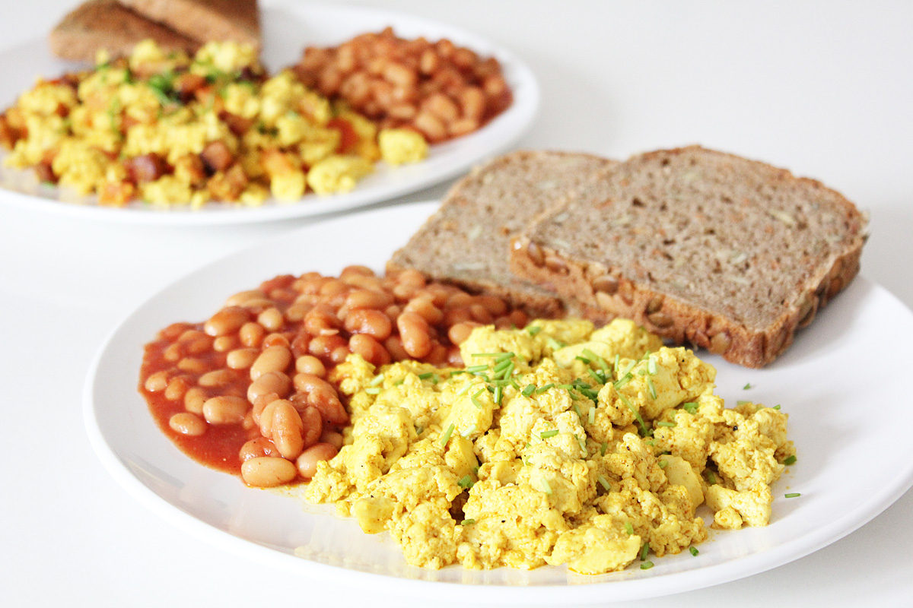
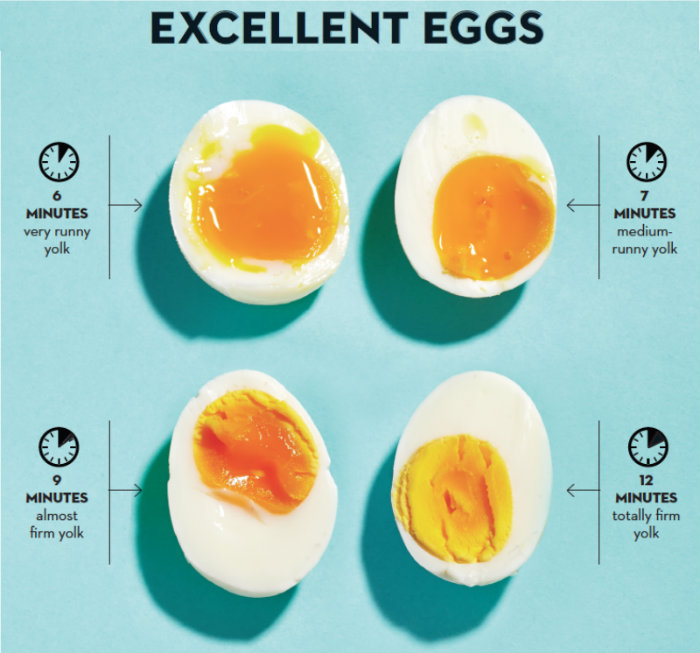

Egg and Baked Beans

Know how to cook eggs? How to open a can of baked beans and heat it in a pan? Great! You're practically already there.
Description
As lazy as it could get!
Ingredients
- An egg or two
- Can of baked beans
- Two slices of bread
- Salt and black pepper
Optional Ingredients:
- Dried or fresh minced parsley
- Available condiments
- Chopped green onion
Steps
The Baked Beans and Toast:
- Open the can of baked beans.
- Reheat baked beans in microwave or frying pan.
- Toast the bread using the toaster or using the pan too.
- Plate them!
Yeah. That's it.
The Eggs:
How do you like your eggs? Nearly everything will work in this recipe! Omelette, Scrambled, Sunny-side-up, poached, boiled, even raw eggs. Most of the real work happens here.
-
"Easy" Omelette:
- Heat the frying pan then add a teaspoon of oil or butter. Keep the heat at medium or medium-low.
- Stir the egg along with a pinch of salt and black pepper into a mixture in a bowl or mug using a fork, then pour into the pan.
- Slide a spatula into the corner, between the pan and the egg. Bring the cooked corner into the middle and let the raw egg fill the gaps.
- Shift the spatula slightly to the left or right (stick to one direction) and continue bringing the cooked corner into the middle until there is little of the liquid left. If you'd like a runny top side, stop here and plate.
- If you'd like a folded omelette, turn the heat to low, tilt the pan with the handle on the low side and fold your omelette then plate.
- If you'd like it fully cooked, simply flip the whole egg with the spatula, wait a few seconds before folding (or not) and plating it.
-
Scrambled Egg:
- Pre-crack the eggs into a bowl. Add a pinch of salt and black pepper. Stir if you want a more even scramble.
- Heat the frying pan, to medium. Add a teaspoon of butter or oil and stir for a moment.
- Pour egg mixture into the pan and stir constantly, mixing the egg on the pan. Start chopping the egg once the liquid starts to curdle. Do it slowly so the egg scrambles into big chunks.
- Stop at preferred doneness and plate.
-
Sunny-Side-Up:
- One teaspoon of oil into the pan (preferrably non-stick) and shift it around. Medium heat until shimmering.
- Crack one or two eggs into the pan, turn heat to medium-low. Close with a lid and leave it alone until the white turns... well white and set, but the yolk would still be runny.
- If you prefer it fully cooked, at a little water into the pan. Gently pour from the corner and close the lid again, until the yolk is fully cooked.
-
Poached:
- Heat the water to a boil in a saucepan, then turn the heat down so the water only shimmers.
- Crack the egg into a small bowl, add salt and pepper to taste.
- Make a whirlpool in the pan with your spatula.
- Drop the egg in the middle of the whirl.
- Cook until preferred doneness before scooping out and plating.
-
Boiled:
- Heat the water to a boil in a saucepan.
- Lower the egg gently using a laddle so it doesn't crack.
- Cook to desired doneness, then plate. Every stove is different so experiment with cooking duration.

-
Raw:
- Be absolutely certain of your egg source. Eating raw egg is a serious matter since your health depends on you not messing the source up! I personally use mori-tama import eggs. They are completely safe to be eaten raw.
- Crack the egg into the plate or right on top of your baked beans.
That's it! Pick the cooking method you'd like, plate with the baked beans and bread, then add whatever condiment you'd like. I highly suggest mayonaise. Enjoy!
[Back to home page]